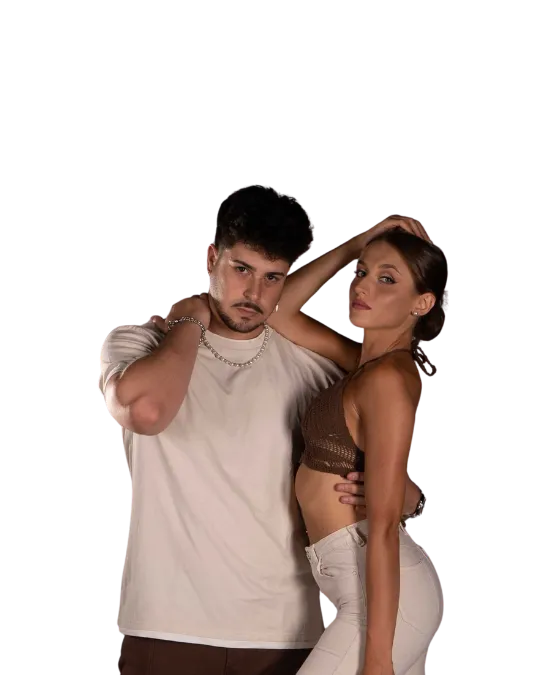

Gero y Migle
Esencia, flow and advanced control
A masterclass for dancers who want more grounded technique, cleaner body pathways and deeper musical interpretation.
Read their artist spotlight →
Milano Sensual Congress is built for dancers who want more than patterns. This is the congress for advanced formation: intensive Bachata workshops, masterclass training, technique, musicality, connection, body control and the precision needed to grow as a serious social dancer.
A valid Full Pass is required to attend the masterclasses. The masterclass is an upgrade added on top of your congress pass, and the upgrade price will increase over time as the event approaches.
The masterclass track is an upgrade for dancers searching for advanced Bachata training, intensive workshops and focused formation. Expect detailed corrections, refined technique and tools you can carry into social dancing, performance and future training.
Improve control, transitions, isolations and movement quality instead of collecting combinations.
Train how to hear structure, texture and accents, then translate them into clearer dancing.
Refine lead-follow communication so advanced movement stays comfortable, responsive and social.
If you are looking for an advanced Bachata workshop in Europe, a Bachata masterclass in Milan, intensive Bachata technique training, musicality classes, connection training or advanced Bachata sensual formation, this track is the focused part of Milano Sensual Congress designed for you.
Three international Bachata artists, three different training angles, one advanced formation experience in Milan.
Esencia, flow and advanced control
A masterclass for dancers who want more grounded technique, cleaner body pathways and deeper musical interpretation.
Read their artist spotlight →Endless Bachata and creative connection
Their training brings fluidity, partner response and advanced social-dance creativity into sharper focus.
Read their artist spotlight →
Technical precision and performance quality
Ideal for dancers who want sharper execution, clearer dynamics and a more professional movement standard.
Read their artist spotlight →This advanced track is for dancers who already have Bachata foundations and want a more demanding training environment. You do not need to be a performer, but you should be ready to focus, repeat, receive details and work beyond comfortable social patterns.
Important: the masterclass cannot be attended with the upgrade alone. You must first purchase a Full Pass, then add the Masterclass Upgrade. The upgrade price will rise over time.
See Tickets and RequirementsYes. It is designed for dancers with Bachata foundations who want advanced training in technique, musicality, connection, body mechanics and social dance quality.
The workshops focus on refined movement, lead-follow communication, musical interpretation, body control, connection and tools that apply directly to social dancing and performance.
Yes. A valid Full Pass is required before adding the Masterclass Upgrade. The masterclass cannot be attended with the upgrade alone.